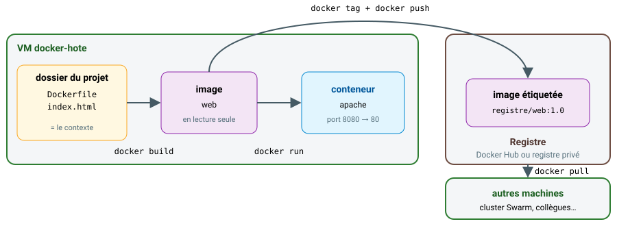
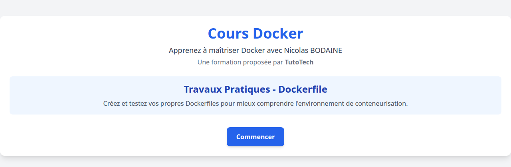
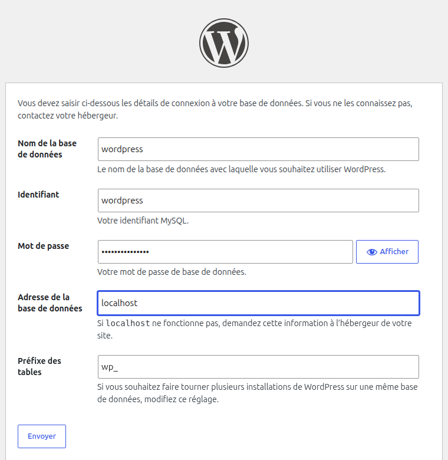
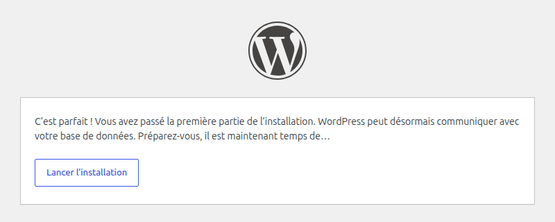

Construire ses images avec un Dockerfile¶
Résumé
Jusqu'ici, toutes les images venaient de Docker Hub. On apprend maintenant à fabriquer ses propres images à partir d'un Dockerfile, un simple fichier texte qui décrit, ligne par ligne, comment construire l'image. Contrairement à docker commit (partie 6), la recette est lisible, reproductible et se range avec le reste du projet.
Au programme : les instructions principales (FROM, RUN, COPY, CMD, ENTRYPOINT, EXPOSE…), la construction avec docker build et son cache, puis trois réalisations : un site Apache personnalisé, un serveur SSH dans une image Debian (à faire seul, corrigé replié), et une pile LAMP avec WordPress dans une seule image, avec ses limites.
| Propriété | Valeur |
|---|---|
| Difficulté | Intermédiaire |
| Durée estimée | 2 h |
| Version décrite | Docker Engine 29.10 (BuildKit), images httpd 2.4.71, debian:13 (13.7), WordPress 7.1.5 |
| Place dans le parcours | Partie 14 sur 17 du parcours Docker — jour 5 |
| Dernière mise à jour | 2026-11-24 |
Convention de lecture
🖥️ PC hôte · 🐧 VM docker-hote, connecté en adminlab · 🌐 navigateur du PC · ✍️ exercice · 🛟 instantané. Point de départ : l'instantané 05-exploitation (fin de la partie 12), ou la VM telle qu'elle est à la fin de la partie 13.
1. Pourquoi écrire un Dockerfile ?¶
En partie 6, on a créé une image avec docker commit : on installe des logiciels à la main dans un conteneur, puis on le fige. Ça marche, mais l'image obtenue est une boîte noire : docker history affiche une couche de 28 Mo sans dire ce qu'elle contient, et personne ne peut la refaire à l'identique.
Un Dockerfile règle ce problème. C'est une recette de cuisine : la liste des ingrédients (l'image de départ, les fichiers à copier) et des étapes (les commandes à exécuter). Docker lit la recette et prépare le plat, l'image, toujours de la même façon. On peut relire la recette, la corriger, la versionner avec Git, et la donner à un collègue qui obtiendra la même image.

Du Dockerfile au conteneur : build, puis run. La distribution par un registre (push, pull) fait l'objet de la partie 15.
Le contexte de construction est le dossier qu'on donne à docker build (souvent ., le dossier courant) : Docker n'a accès qu'aux fichiers de ce dossier. Un COPY ne peut pas aller chercher un fichier ailleurs sur la VM.
2. Les instructions principales¶
Un Dockerfile contient une instruction par ligne, en majuscules par convention, suivie de ses arguments. Elles s'exécutent de haut en bas.
| Instruction | Rôle | Exemple |
|---|---|---|
FROM |
Choisit l'image de base, le point de départ | FROM debian:13 |
ARG |
Déclare une variable utilisée seulement pendant la construction ; modifiable avec --build-arg |
ARG APP_VERSION=1.0 |
ENV |
Définit une variable d'environnement, présente pendant la construction et dans les conteneurs | ENV APP_ENV=production |
WORKDIR |
Change le dossier de travail des instructions suivantes (et du conteneur) ; le crée s'il n'existe pas | WORKDIR /app |
RUN |
Exécute une commande pendant la construction, et enregistre le résultat dans une nouvelle couche | RUN apt-get update && apt-get install -y curl |
COPY |
Copie des fichiers du contexte dans l'image | COPY index.html /usr/local/apache2/htdocs/ |
ADD |
Comme COPY, mais sait aussi décompresser une archive locale ou télécharger une URL ; on lui préfère COPY quand on n'a pas besoin de ces fonctions |
ADD site.tar.gz /var/www/ |
USER |
Change l'utilisateur des instructions suivantes et du conteneur (au lieu de root) |
USER appli |
CMD |
La commande lancée au démarrage du conteneur, ou les arguments par défaut de l'ENTRYPOINT ; remplacée par ce qu'on tape après le nom de l'image dans docker run |
CMD ["apachectl", "-D", "FOREGROUND"] |
ENTRYPOINT |
Le programme principal du conteneur ; ce qu'on tape après le nom de l'image devient ses arguments | ENTRYPOINT ["/init.sh"] |
EXPOSE |
Documente le port sur lequel l'application écoute. N'ouvre et ne publie rien | EXPOSE 80 |
VOLUME |
Déclare un dossier dont les données doivent vivre hors du conteneur : Docker y crée un volume anonyme si on n'en monte pas un | VOLUME /var/lib/mysql |
LABEL |
Ajoute des étiquettes descriptives (version, description) | LABEL version="1.0" |
HEALTHCHECK |
Commande qui teste la santé du conteneur, comme en partie 8 | HEALTHCHECK CMD wget -q --spider http://127.0.0.1/ |
Quelques précisions utiles :
FROMvient en premier. Seule exception : unARGpeut le précéder pour choisir la version de l'image de base (ARG VERSION=13puisFROM debian:$VERSION). Un Dockerfile peut contenir plusieursFROM(construction en plusieurs étapes, citée en section 6).- Chaque
RUN,COPYouADDcrée une couche. On regroupe donc les commandes liées dans un seulRUNavec&&, et on y supprime les fichiers temporaires : un fichier supprimé dans unRUNsuivant reste stocké dans la couche précédente. - Forme « exec » ou forme « shell ».
CMD ["/usr/sbin/sshd", "-D"](entre crochets, avec des guillemets doubles) lance le programme directement : il devient le processus n°1 du conteneur et reçoit le signal d'arrêt dedocker stop.CMD /usr/sbin/sshd -Dpasse par/bin/sh -c. En forme exec, aucun shell ne cherche le programme dans lePATH: on donne son chemin complet (sshdlui-même refuse d'ailleurs de démarrer sans :sshd requires execution with an absolute path). On préfère la forme exec pourCMDetENTRYPOINT. - Un conteneur vit tant que son processus principal tourne (partie 2). La commande de démarrage doit donc rester au premier plan :
apachectl -D FOREGROUND,sshd -D,nginx -g 'daemon off;'. Un service lancé « en arrière-plan » rend la main, le processus principal se termine, et le conteneur s'arrête aussitôt.
EXPOSE ne publie aucun port
EXPOSE 80 est une étiquette qui indique « cette application écoute sur le port 80 ». C'est utile à la lecture et à certains outils, mais le port reste fermé depuis l'extérieur tant qu'on ne le publie pas avec -p au lancement (ou -P, qui publie tous les ports déclarés sur des ports pris au hasard). À l'inverse, une image sans EXPOSE se publie très bien avec -p. La section 3.4 le vérifie.
2.1 Essayer CMD, ENTRYPOINT, ARG et ENV¶
Ces instructions se comprennent mieux en les essayant. 🐧 Créer un dossier d'essai et ce Dockerfile :
FROM alpine:3.24
ARG VERSION_APP=1.0
ENV APP_ENV=production
RUN echo "construit en version $VERSION_APP" > /version.txt
RUN adduser -D appli
WORKDIR /home/appli
USER appli
ENTRYPOINT ["echo", "Bonjour"]
CMD ["tout le monde"]
🐧 Construire l'image en changeant la valeur de l'ARG, puis lancer trois conteneurs :
docker build -q -t essai --build-arg VERSION_APP=2.0 .
docker run --rm essai
docker run --rm essai "les admins"
docker run --rm --entrypoint sh essai -c 'cat /version.txt; echo "APP_ENV=$APP_ENV VERSION_APP=$VERSION_APP"; id; pwd'
sha256:a27dfd65273b8ad28952f4887a7ebf6dca091126b62d03bd9f43865bd4a8f596
Bonjour tout le monde
Bonjour les admins
construit en version 2.0
APP_ENV=production VERSION_APP=
uid=1000(appli) gid=1000(appli) groups=1000(appli)
/home/appli
Ce qu'on observe :
ENTRYPOINT+CMD: le conteneur lanceecho Bonjour tout le monde. Ce qu'on tape après le nom de l'image ("les admins") remplace leCMD, pas l'ENTRYPOINT. Pour changer l'ENTRYPOINT, il faut l'option--entrypoint.ARGa servi pendant la construction (version 2.0dans le fichier), mais n'existe plus dans le conteneur (VERSION_APP=vide).ENV, lui, est toujours là.USERetWORKDIR: le conteneur tourne avec l'utilisateurappli(uid 1000), pasroot, dans/home/appli.
🐧 Supprimer l'image d'essai : docker image rm essai.
3. TP guidé : un serveur Apache construit avec un Dockerfile¶
Objectif : une image web qui contient le serveur Apache et une page d'accueil personnalisée.
3.1 Préparer le dossier du projet¶
-
🐧 Créer un dossier
apacheet s'y placer : -
🐧 Créer la page d'accueil :
Coller ce contenu, puis enregistrer avec Ctrl+X, O (ou Y selon la langue de
nano) et Enter :<!DOCTYPE html> <html lang="fr"> <head> <meta charset="UTF-8"> <meta name="viewport" content="width=device-width, initial-scale=1.0"> <title>Cours Docker - TutoTech</title> <script src="https://cdn.tailwindcss.com"></script> </head> <body class="bg-gray-100"> <div class="container mx-auto my-10 p-6 bg-white shadow-lg rounded-xl text-center"> <h1 class="text-4xl font-bold text-blue-600">Cours Docker</h1> <p class="mt-2 text-gray-700 text-lg">Apprenez à maîtriser Docker avec Nicolas BODAINE</p> <p class="mt-1 text-gray-500">Une formation proposée par <span class="font-semibold">TutoTech</span></p> <div class="mt-6 p-4 bg-blue-50 rounded-lg"> <h2 class="text-2xl font-semibold text-blue-800">Travaux Pratiques - Dockerfile</h2> <p class="mt-2 text-gray-600">Créez et testez vos propres Dockerfiles pour mieux comprendre l'environnement de conteneurisation.</p> </div> <div class="mt-8"> <button class="px-6 py-3 bg-blue-600 text-white font-semibold rounded-lg shadow-md hover:bg-blue-700">Commencer</button> </div> </div> </body> </html>La mise en forme vient de Tailwind CSS, chargé depuis Internet par le navigateur (ligne
<script src=…>) : sans accès à Internet sur le PC, la page s'affiche sans couleurs, mais elle s'affiche. -
🐧 Créer le Dockerfile, dans le même dossier :
Ligne Rôle FROM httpd:latestPart de l'image officielle d'Apache ( httpd), déjà croisée aux parties 2 et 9.latestsimplifie ce premier essai ; la section 6 explique pourquoi, pour un vrai service, on fige la version (httpd:2.4)COPY index.html /usr/local/apache2/htdocs/Copie la page dans le dossier que cette image publie (sa racine web) EXPOSE 80Documente le port d'Apache. L'image httpdle déclare déjà : la ligne est redondante, mais elle rend le fichier lisible seulLe fichier s'appelle exactement
Dockerfile, avec un D majuscule et sans extension.
3.2 Construire l'image¶
🐧 Lancer la construction :
| Élément | Rôle |
|---|---|
docker build |
Construit une image à partir d'un Dockerfile |
-t web |
Donne le nom (tag) web à l'image ; sans étiquette après :, c'est web:latest |
. |
Le contexte : le dossier courant, où se trouvent le Dockerfile et index.html. Ne pas l'oublier |
[+] Building 1.1s (7/7) FINISHED docker:default
=> [internal] load build definition from Dockerfile 0.0s
=> => transferring dockerfile: 108B 0.0s
=> [internal] load metadata for docker.io/library/httpd:latest 0.1s
=> [internal] load .dockerignore 0.0s
=> => transferring context: 2B 0.0s
=> [internal] load build context 0.0s
=> => transferring context: 1.09kB 0.0s
=> CACHED [1/2] FROM docker.io/library/httpd:latest@sha256:32e9403360ab2 0.1s
=> => resolve docker.io/library/httpd:latest@sha256:32e9403360ab2f104752 0.0s
=> [2/2] COPY index.html /usr/local/apache2/htdocs/ 0.1s
=> exporting to image 0.5s
…
=> => naming to docker.io/library/web:latest 0.0s
Le moteur de construction, BuildKit, affiche une ligne par étape : [1/2] FROM, puis [2/2] COPY. Ici l'image httpd est déjà sur la VM (CACHED sur la ligne FROM) ; si elle manque, Docker la télécharge d'abord, et la construction prend environ 5 secondes au lieu d'une.
🐧 Regarder l'image et ses couches :
IMAGE ID DISK USAGE CONTENT SIZE EXTRA
web:latest efe2f0c5ed33 175MB 45.4MB
IMAGE CREATED CREATED BY SIZE COMMENT
efe2f0c5ed33 1 second ago EXPOSE 80/tcp 0B buildkit.dockerfile.v0
<missing> 1 second ago COPY index.html /usr/local/apache2/htdocs/ #… 24.6kB buildkit.dockerfile.v0
<missing> 12 days ago CMD ["httpd-foreground"] 0B buildkit.dockerfile.v0
<missing> 12 days ago EXPOSE map[80/tcp:{}] 0B buildkit.dockerfile.v0
…
<missing> 2 weeks ago # debian.sh --arch 'amd64' out/ 'trixie' '@1… 87.7MB debuerreotype 0.17
Cette fois, docker history raconte toute l'histoire : nos deux lignes en haut, puis celles du Dockerfile de l'image httpd, jusqu'à la Debian 13 « trixie » de départ. On voit aussi que notre image n'a pas de CMD à elle : elle hérite de celui de httpd (httpd-foreground).
3.3 Démarrer le conteneur¶
-
🐧 Essayer de publier le port 80, comme on le ferait sur une VM neuve :
docker: Error response from daemon: failed to set up container networking: driver failed programming external connectivity on endpoint apache (c96aec89…): Bind for 0.0.0.0:80 failed: port is already allocatedLe port 80 de la VM est déjà pris par Nginx Proxy Manager depuis la partie 9. Le conteneur a été créé mais pas démarré (état
Created) : le supprimer, puis le relancer sur le port 8080 :Option Rôle -dLance le conteneur en arrière-plan --name apacheNom du conteneur -p 8080:80Publie le port 8080 de la VM vers le port 80 du conteneur webNom de l'image construite à l'étape précédente -
🌐 Ouvrir
http://IP-de-la-VM:8080:
La page copiée dans l'image par le Dockerfile, servie par Apache
Publier sur le port 80 quand même ?
Pour que le site réponde sans :8080, deux solutions : arrêter le conteneur qui tient déjà le port 80 (ce n'est pas le but ici), ou mieux, ajouter un hôte de proxy dans Nginx Proxy Manager vers IP-de-la-VM:8080, comme en partie 9.
3.4 Vérifier que EXPOSE ne publie rien¶
🐧 Lancer deux autres conteneurs de la même image : l'un sans -p, l'autre avec -P (P majuscule) :
docker run -d --name apache-sans-p web
docker run -d --name apache-P -P web
docker ps --filter name=apache --format '{{.Names}} | {{.Ports}}'
apache-P | 0.0.0.0:32768->80/tcp, [::]:32768->80/tcp
apache-sans-p | 80/tcp
apache | 0.0.0.0:8080->80/tcp, [::]:8080->80/tcp
apache-sans-paffiche seulement80/tcp: le port est déclaré, mais aucun port de la VM ne mène à lui. Depuis le PC, impossible de le joindre.apache-P:-Pa publié le port déclaré parEXPOSEsur un port pris au hasard (32768). C'est le seul effet concret d'EXPOSE.
🐧 Supprimer les deux conteneurs d'essai : docker rm -f apache-sans-p apache-P.
3.5 Le cache de construction¶
🐧 Modifier la page, puis reconstruire :
La construction ne prend qu'une seconde et demie environ : Docker réutilise les couches dont rien n'a changé (CACHED) et ne refait que l'étape COPY, dont le fichier source a changé, et toutes celles qui suivent.
Ordonner un Dockerfile pour profiter du cache
On place en haut ce qui change rarement (installation des paquets) et en bas ce qui change souvent (copie du code ou du site). Si le COPY du site était avant un long apt-get install, chaque modification de la page relancerait toute l'installation.
🐧 Le conteneur apache tourne toujours avec l'ancienne image : une image reconstruite ne met pas à jour les conteneurs existants. Pour en profiter, il faut recréer le conteneur (comme une mise à jour, partie 12) :
4. TP : un serveur SSH dans une image Debian ✍️¶
En partie 3, on a installé SSH à la main dans un conteneur Debian, et on a vu que tout était perdu, ou à relancer, au redémarrage. On fait maintenant la même chose proprement, avec un Dockerfile.
Mission : écrire un Dockerfile qui construit une image debian-ssh à partir de debian:13, avec :
- le serveur SSH installé (paquet
openssh-server) ; - un utilisateur
user(avec un dossier personnel et le shell/bin/bash), mot de passeTutoDocker-Lab1!; - le port 22 documenté ;
- le serveur SSH lancé automatiquement, au premier plan, à chaque démarrage du conteneur.
Puis : construire l'image, démarrer un conteneur debian-ssh-container qui publie le port 54321 de la VM vers le port 22, et s'y connecter en SSH avec l'utilisateur user.
Ce qu'il faut obtenir :
- l'image se construit sans erreur ;
- le conteneur reste démarré (
Updansdocker ps) ; - la connexion
ssh user@localhost -p 54321depuis la VM aboutit, avecuser(et pasroot) ; - on sait expliquer chaque ligne du Dockerfile et chaque option de
docker run.
Indices
- Le programme du serveur SSH est
/usr/sbin/sshd; l'option-Dle garde au premier plan. useradd -ms /bin/bash usercrée l'utilisateur ;chpasswdlit des lignesutilisateur:motdepassesur son entrée.sshda besoin du dossier/run/sshdpour démarrer.
Corrigé
Le Dockerfile. 🐧 Dans un dossier ~/debian-ssh :
# Utiliser Debian 13 comme image de base
FROM debian:13
# Mettre à jour la liste des paquets et installer le serveur SSH
RUN apt-get update && \
apt-get install -y openssh-server && \
rm -rf /var/lib/apt/lists/*
# Créer le répertoire nécessaire au serveur SSH
RUN mkdir -p /run/sshd
# Créer un utilisateur nommé « user » avec un mot de passe
RUN useradd -ms /bin/bash user && \
echo 'user:TutoDocker-Lab1!' | chpasswd
# Documenter le port du serveur SSH
EXPOSE 22
# Démarrer le serveur SSH au premier plan à chaque lancement du conteneur
CMD ["/usr/sbin/sshd", "-D"]
| Ligne | Explication |
|---|---|
FROM debian:13 |
Image officielle Debian 13. Une version précise (13) plutôt que latest : l'image ne change pas de version majeure dans le dos de l'administrateur (partie 12) |
apt-get update |
Met à jour la liste des paquets disponibles (l'image de base n'en contient aucune). apt-get plutôt qu'apt, prévu pour un humain, qui affiche un avertissement dans les scripts |
apt-get install -y openssh-server |
Installe le serveur SSH ; -y répond « oui » à la confirmation, car personne n'est là pour taper pendant la construction |
rm -rf /var/lib/apt/lists/* |
Supprime la liste des paquets, inutile une fois l'installation faite, dans le même RUN (section 2) |
mkdir -p /run/sshd |
sshd range des fichiers de travail dans /run/sshd et refuse de démarrer si ce dossier manque. Sur Debian 13, le paquet le crée déjà : -p évite l'erreur « File exists » si le dossier existe, et le crée sur les systèmes où il manque |
useradd -ms /bin/bash user |
Crée l'utilisateur user : -m crée son dossier personnel /home/user, -s /bin/bash choisit son shell |
echo 'user:TutoDocker-Lab1!' | chpasswd |
chpasswd reçoit utilisateur:motdepasse et définit le mot de passe. Les guillemets simples empêchent le shell d'interpréter le ! |
EXPOSE 22 |
Documente le port de SSH. N'ouvre rien : la publication se fait avec -p au lancement |
CMD ["/usr/sbin/sshd", "-D"] |
Commande de démarrage du conteneur (ce n'est pas un RUN, qui s'exécuterait une seule fois, pendant la construction). -D (don't detach) garde sshd au premier plan : il devient le processus principal et le conteneur reste en vie |
Construire l'image. 🐧
La première construction dure une vingtaine de secondes (téléchargement et installation des paquets). Avec apt au lieu d'apt-get, la construction afficherait WARNING: apt does not have a stable CLI interface, sans gravité, et l'image garderait la liste des paquets (301 Mo au lieu de 263 Mo).
Un SSH avec un mot de passe publié
Comme en partie 3, ce conteneur accepte une connexion SSH avec un mot de passe écrit sur cette page, sur le port 54321 de toutes les adresses de la VM, sans passer par son pare-feu (partie 7). La VM reste en NAT ou en réseau privé hôte, jamais en mode pont, et le conteneur se supprime dès la fin de l'essai (docker rm -f debian-ssh-container). Pour un test depuis la VM seulement, -p 127.0.0.1:54321:22 suffit.
Démarrer le conteneur. 🐧
docker run -d -p 54321:22 --name debian-ssh-container debian-ssh
docker ps --filter name=debian-ssh --format '{{.Names}} | {{.Status}} | {{.Ports}}'
docker exec debian-ssh-container ps -ef
debian-ssh-container | Up 2 seconds | 0.0.0.0:54321->22/tcp, [::]:54321->22/tcp
UID PID PPID C STIME TTY TIME CMD
root 1 0 2 11:27 ? 00:00:00 sshd: /usr/sbin/sshd -D [listener] 0 of 10-100 startups
root 7 0 57 11:27 ? 00:00:00 ps -ef
sshd est bien le processus n°1. Comparer avec la partie 3, où le PID 1 était bash et où sshd disparaissait au redémarrage : ici, docker restart relance sshd automatiquement.
| Option | Explication |
|---|---|
-d |
Lance le conteneur en arrière-plan |
-p 54321:22 |
Le port 54321 de la VM mène au port 22 (SSH) du conteneur. Le port 22 de la VM reste celui du SSH de la VM |
--name debian-ssh-container |
Nom du conteneur |
debian-ssh |
L'image construite |
Se connecter. 🐧 Depuis la VM (ou 🖥️ depuis le PC avec ssh user@IP-de-la-VM -p 54321) :
Répondre yes à la question sur l'empreinte du serveur (première connexion), puis taper le mot de passe TutoDocker-Lab1!. Dans la session :
Le nom d'hôte est l'identifiant du conteneur. Taper exit pour revenir à la VM.
| Élément | Explication |
|---|---|
user |
L'utilisateur créé dans le Dockerfile |
localhost |
La VM elle-même, qui fait tourner Docker |
-p 54321 |
Le port publié de la VM, qui renvoie vers le port 22 du conteneur |
Un mot de passe dans un Dockerfile reste lisible dans l'image
🐧 Essayer :
Toute personne qui récupère l'image lit le mot de passe. Même chose pour un fichier copié dans l'image : le script init.sh de la section 5 contient le mot de passe de la base, lisible par docker run --rm --entrypoint cat lamp-wordpress /init.sh. Pour un lab, c'est acceptable ; pour une image partagée (partie 15), jamais. En production, les secrets se passent au lancement (variables d'environnement, fichiers montés, secrets Docker), pas dans l'image. Et, comme en partie 3, un serveur SSH dans un conteneur reste une exception : pour administrer un conteneur, docker exec suffit.
5. TP guidé : une pile LAMP avec WordPress dans une seule image¶
Une pile LAMP, c'est **L**inux, **A**pache, **M**ariaDB (ou MySQL) et **P**HP : la base de très nombreux sites web, dont WordPress. Ce TP met les quatre dans une seule image, avec un petit script de démarrage. C'est un bon exercice pour comprendre ENTRYPOINT et un script d'initialisation ; la section 5.5 explique pourquoi on ne fait pas ainsi en production.
5.1 Le Dockerfile¶
-
🐧 Créer le dossier du projet :
-
Coller ce contenu :
# Image de base : Debian 13 FROM debian:13 # Métadonnées décrivant l'image LABEL version="1.0" \ description="Dockerfile pédagogique pour déployer un serveur LAMP avec WordPress" # Fuseau horaire ENV TZ=Europe/Paris RUN ln -snf /usr/share/zoneinfo/$TZ /etc/localtime && echo $TZ > /etc/timezone # Apache, MariaDB, PHP, wget et nano, puis nettoyage du cache des paquets RUN apt-get update && apt-get install -y \ apache2 \ mariadb-server \ php \ php-mysql \ libapache2-mod-php \ wget \ nano && \ apt-get clean && rm -rf /var/lib/apt/lists/* # WordPress en français RUN wget https://fr.wordpress.org/latest-fr_FR.tar.gz && \ tar -xzf latest-fr_FR.tar.gz && \ rm -rf /var/www/html/* && \ cp -r wordpress/* /var/www/html && \ chown -R www-data:www-data /var/www/html && \ rm -rf wordpress latest-fr_FR.tar.gz # Script de démarrage COPY init.sh /init.sh RUN chmod +x /init.sh EXPOSE 80 ENTRYPOINT ["/init.sh"]Ligne Explication LABEL …Étiquettes descriptives, visibles avec docker inspectENV TZ=…puisRUN ln -snf …Règle le fuseau horaire du conteneur sur Paris (lien /etc/localtime)RUN apt-get update && apt-get install -y …Installe Apache, MariaDB, PHP et son module pour Apache, wgetetnano, en une seule coucheapt-get clean && rm -rf /var/lib/apt/lists/*Supprime le cache des paquets dans le même RUN, pour qu'il ne pèse pas dans l'imageRUN wget … && tar … && …Télécharge la dernière version française de WordPress (celle du jour de la construction), la décompresse dans /var/www/html, donne les fichiers àwww-data(l'utilisateur d'Apache), puis supprime l'archiveCOPY init.sh /init.shetRUN chmod +xCopie le script de démarrage et le rend exécutable ENTRYPOINT ["/init.sh"]Le conteneur exécute init.shà chaque démarrage
5.2 Le script init.sh¶
Le script doit démarrer MariaDB, créer la base et l'utilisateur de WordPress, puis lancer Apache au premier plan.
-
🐧 Dans le même dossier :
#!/bin/bash # Démarre MariaDB (sur Debian 13, le service s'appelle « mariadb ») service mariadb start # Crée la base et l'utilisateur de WordPress (IF NOT EXISTS : pas d'erreur au redémarrage du conteneur) mysql -e "CREATE DATABASE IF NOT EXISTS wordpress DEFAULT CHARACTER SET utf8mb4 COLLATE utf8mb4_unicode_ci;" mysql -e "CREATE USER IF NOT EXISTS 'wordpress'@'localhost' IDENTIFIED BY 'TutoDocker-Lab1!';" mysql -e "GRANT ALL PRIVILEGES ON wordpress.* TO 'wordpress'@'localhost';" mysql -e "FLUSH PRIVILEGES;" # Démarre Apache au premier plan : c'est lui qui garde le conteneur en vie apachectl -D FOREGROUNDCommande Explication service mariadb startDémarre le serveur de bases de données. Il n'y a pas de systemddans un conteneur : on passe par le script de serviceCREATE DATABASE IF NOT EXISTS wordpress …Crée la base wordpress, enutf8mb4(tous les caractères, émojis compris)CREATE USER IF NOT EXISTS 'wordpress'@'localhost' …Crée l'utilisateur wordpress, qui ne peut se connecter que depuis le conteneur lui-mêmeGRANT ALL PRIVILEGES …puisFLUSH PRIVILEGESLui donne tous les droits sur sa base, et applique apachectl -D FOREGROUNDLance Apache au premier plan : tant qu'Apache tourne, le conteneur vit IF NOT EXISTScompte : le script s'exécute à chaque démarrage du conteneur. Sans lui, le deuxième démarrage afficherait des erreurs « la base existe déjà ». -
🐧 Rendre le script exécutable :
Sur Debian 13, le service s'appelle mariadb, pas mysql
Avec service mysql start, le conteneur démarre quand même, mais ses journaux montrent l'échec :
grep: /etc/init.d/mysql: No such file or directory
mysql: unrecognized service
ERROR 2002 (HY000): Can't connect to local server through socket '/run/mysqld/mysqld.sock' (2)
Le piège : Apache démarre, et l'assistant de WordPress s'affiche normalement. L'erreur n'apparaît qu'à l'étape de connexion à la base. D'où le réflexe : docker logs après chaque premier démarrage.
5.3 Construire et démarrer¶
-
🐧 Construire l'image :
Compter environ 2 minutes (téléchargement de plus de 100 paquets et de WordPress). L'image contient PHP 8.4, MariaDB 11.8, Apache 2.4, et la version de WordPress du jour de la construction (7.1.5 le 24 novembre 2026).
Une image qui change à chaque construction
latest-fr_FR.tar.gzdésigne toujours la dernière version : reconstruire l'image dans un mois peut donner un autre WordPress. Pour une image reproductible, on télécharge une version précise, par exemplehttps://fr.wordpress.org/wordpress-7.1.5-fr_FR.tar.gz, et on vérifie son empreinte, publiée à côté (même adresse suivie de.sha1) : même principe que figer l'étiquette d'une image (section 6). -
🐧 Démarrer le conteneur et lire ses journaux. Tant que l'assistant d'installation n'est pas terminé, le premier visiteur du port 65432 peut créer le compte administrateur du site : le terminer aussitôt (étape 3), et garder la VM en NAT ou en réseau privé hôte.
Starting MariaDB database server: mariadbd .. AH00558: apache2: Could not reliably determine the server's fully qualified domain name, using 172.17.0.3. Set the 'ServerName' directive globally to suppress this messageMariaDB a démarré ; le message
AH00558d'Apache est sans gravité (déjà vu en partie 3). -
🐧 Vérifier la base et les processus :
docker exec wordpress-lamp mysql -e "SHOW DATABASES;" docker exec wordpress-lamp ps -eo pid,user,commLa liste des bases contient
wordpress. Le processus n°1 estinit.sh, avecmariadbdet plusieursapache2en dessous.
5.4 Installer WordPress¶
-
🌐 Ouvrir
http://IP-de-la-VM:65432. L'assistant de WordPress s'ouvre en français. Cliquer sur C'est parti !. -
🌐 Saisir les informations de la base :
Champ Valeur Nom de la base de données wordpressIdentifiant wordpressMot de passe TutoDocker-Lab1!Adresse de la base de données localhost(la base est dans le même conteneur)Préfixe des tables wp_(ne pas changer)
Les détails de connexion à la base MariaDB du conteneur
-
🌐 Cliquer sur Envoyer :

WordPress joint bien la base créée par
init.sh -
🌐 Cliquer sur Lancer l'installation, puis remplir Titre du site (au choix), Identifiant
admin, Mot de passeTutoDocker-Lab1!(WordPress le juge « Forte ») et Votre e-mail avec une adresse fictive (admin@lab.local). Cliquer sur Installer WordPress : le message « Quel succès ! » confirme l'installation.
5.5 Pourquoi on ne fait pas ainsi en production¶
🐧 Essayer : supprimer le conteneur et en recréer un, à partir de la même image :
docker rm -f wordpress-lamp
docker run -d -p 65432:80 --name wordpress-lamp lamp-wordpress
sleep 6
curl -s -o /dev/null -w 'code=%{http_code} -> %{redirect_url}\n' http://localhost:65432/
Retour à l'assistant d'installation : le site, sa configuration (wp-config.php) et la base étaient dans la couche du conteneur, supprimée avec lui (partie 5). Un simple docker restart les aurait gardés, mais la moindre mise à jour de l'image (qui impose de recréer le conteneur) les perd.
Les autres défauts de cette image « tout-en-un » :
- Un seul processus principal : si MariaDB s'arrête, Docker ne le voit pas (il ne surveille qu'
init.shet Apache), et rien ne le relance. - Mise à jour : changer de version de PHP oblige à reconstruire et recréer toute la pile, base comprise.
- Pas de passage à l'échelle : impossible de lancer trois serveurs web devant une seule base.
La bonne pratique, déjà appliquée en partie 10 : un service par conteneur (WordPress d'un côté, MariaDB de l'autre), des volumes pour les données, et un fichier Compose pour décrire l'ensemble. Ce TP reste utile pour comprendre ce qui se passe dans une image comme wordpress:latest.
🐧 Faire le ménage : docker rm -f wordpress-lamp debian-ssh-container apache. Garder les images web et debian-ssh : elles servent en partie 15.
6. Les bonnes pratiques d'un Dockerfile¶
| Pratique | Pourquoi |
|---|---|
Partir d'une image officielle et figer sa version (debian:13, nginx:1.31-alpine) |
Image suivie et corrigée ; pas de changement de version majeure surprise |
Préférer une image de base légère (-alpine, -slim) quand elle suffit |
Moins de place, moins de failles à corriger (partie 12, Trivy) |
Regrouper les commandes liées dans un seul RUN, et nettoyer dans ce même RUN |
Moins de couches, image plus petite |
| Mettre en haut ce qui change rarement, en bas ce qui change souvent | Le cache accélère les reconstructions |
Un fichier .dockerignore dans le dossier du projet |
Exclut du contexte les fichiers inutiles ou sensibles (.git, sauvegardes, .env), comme un .gitignore |
| Aucun secret dans l'image (mot de passe, clé, jeton) | docker history les révèle à quiconque récupère l'image |
Un utilisateur non root (USER) quand l'application le permet |
Limite les dégâts en cas de faille (partie 12) |
| Une application par conteneur, qui reste au premier plan | Docker surveille et relance le bon processus |
HEALTHCHECK pour les services |
Docker, Compose et Swarm savent si le service répond vraiment |
Pour aller plus loin : la construction en plusieurs étapes
Un Dockerfile peut contenir plusieurs FROM : une première étape compile une application avec tous les outils nécessaires, une seconde ne récupère que le résultat (COPY --from=…) dans une image légère. C'est le multi-stage build, très utilisé par les développeurs ; la documentation de Docker le présente en détail (voir Ressources).
7. Vérifier son lab¶
Vérifier son lab
🐧 Après la section 5 :
docker image ls --format '{{.Repository}}:{{.Tag}} {{.Size}}' | grep -E '^(web|debian-ssh|lamp-wordpress):'
docker run --rm debian-ssh sh -c 'id user; ls -ld /run/sshd'
docker inspect web --format '{{json .Config.ExposedPorts}}'
Résultat attendu (l'ordre des images et la date du dossier peuvent varier) :
debian-ssh:latest 263MB
web:latest 175MB
lamp-wordpress:latest 949MB
uid=1000(user) gid=1000(user) groups=1000(user)
drwxr-xr-x 2 root root 4096 Nov 24 12:52 /run/sshd
{"80/tcp":{}}
La dernière ligne est le port déclaré par EXPOSE.
8. Questions de révision¶
- Quelle différence entre une image créée avec
docker commitet une image construite avec un Dockerfile ? - Un conteneur lancé avec
docker run -d monimages'arrête aussitôt, alors que la construction s'est bien passée. Quelle est la cause la plus probable ? EXPOSE 80est dans le Dockerfile, mais le site est injoignable depuis le PC. Pourquoi ?- Différence entre
RUN,CMDetENTRYPOINT? - Pourquoi écrire
apt-get update && apt-get install -y … && rm -rf /var/lib/apt/lists/*dans un seulRUN? - Pourquoi ne faut-il pas écrire un mot de passe réel dans un Dockerfile ?
Corrigé
docker commitfige un conteneur modifié à la main : on ne sait pas ce qu'il contient ni comment le refaire. Le Dockerfile est une recette lisible, versionnable et reproductible : la même image se reconstruit à l'identique, etdocker historymontre chaque étape.- Le processus principal se termine : la commande de démarrage (
CMDouENTRYPOINT) lance un service en arrière-plan puis rend la main, ou finit tout de suite. Il faut une commande qui reste au premier plan (sshd -D,apachectl -D FOREGROUND).docker logsaide à trouver la cause. EXPOSEne fait que documenter le port. Il faut le publier au lancement :-p 8080:80(ou-P).RUNs'exécute pendant la construction et laisse son résultat dans une couche.CMDetENTRYPOINTs'exécutent au démarrage de chaque conteneur :ENTRYPOINTest le programme principal,CMDsa commande ou ses arguments par défaut, remplaçables en fin dedocker run.- Chaque
RUNcrée une couche. Un fichier supprimé dans unRUNsuivant reste stocké dans la couche précédente : l'image ne maigrit pas. Dans un seulRUN, le cache des paquets n'est jamais enregistré. Etupdate+installensemble évitent d'installer à partir d'une liste de paquets ancienne restée en cache. - Le texte du Dockerfile est enregistré dans l'image :
docker history --no-truncl'affiche à toute personne qui récupère l'image, par exemple depuis un registre. Les secrets se fournissent au lancement.
Ressources¶
- Référence du Dockerfile — toutes les instructions et leurs options (en anglais).
- Bonnes pratiques de construction — les conseils officiels de Docker.
- Construction en plusieurs étapes — le multi-stage build.
- Image officielle
httpd— l'image Apache utilisée en section 3. - Partie précédente : Des projets sympas à déployer · Partie suivante : Distribuer ses images : Docker Hub et registre privé.